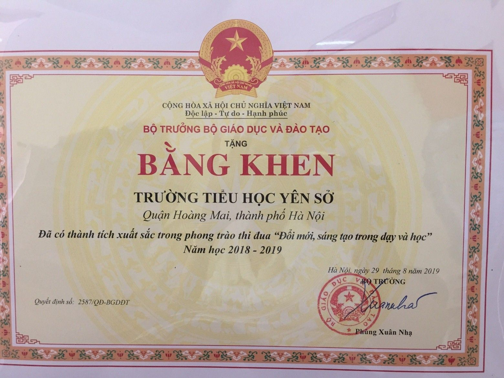
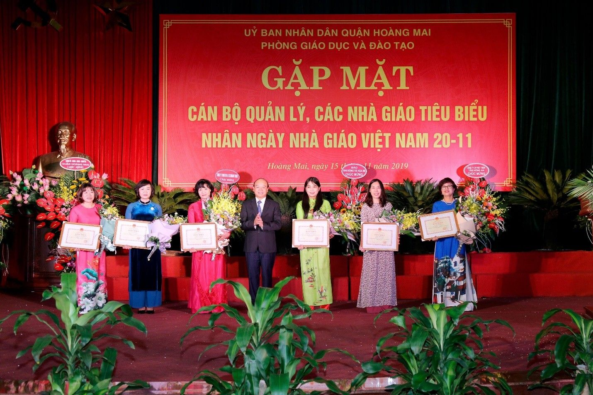
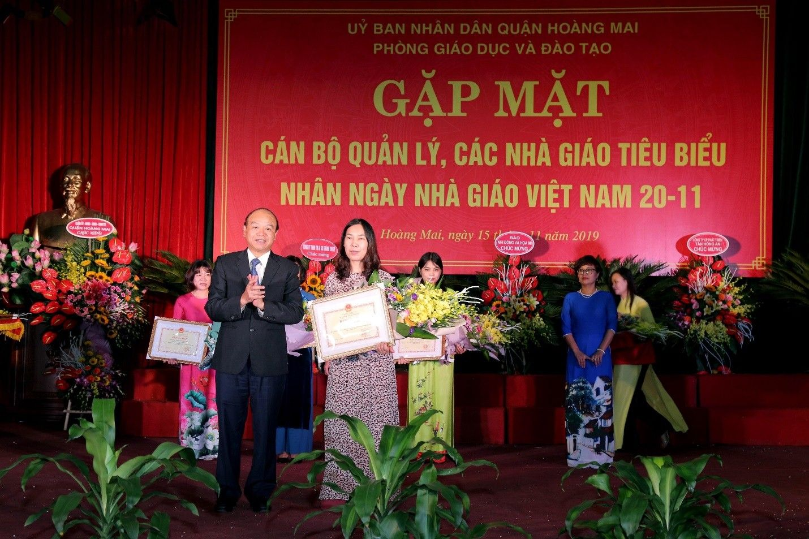

TRƯỜNG TIỂU HỌC YÊN SỞ VINH DỰ ĐƯỢC NHẬN BẰNG KHEN CỦA BỘ TRƯỞNG BỘ GIÁO DỤC VÀ ĐÀO TẠO NĂM HỌC 2018 – 2019
Trong không khí phấn khởi cả nước hướng về Ngày Nhà giáo Việt Nam, sáng nay (15/11/2019), ngành GD&ĐT quận Hoàng Mai đã long trọng tổ chức buổi gặp mặt các cán bộ quản lý, các nhà giáo tiêu biểu nhân ngày Nhà giáo Việt Nam 20/11.
Năm học 2018 – 2019, phát huy những thành tích đã đạt được từ những năm học trước, trường Tiểu học Yên Sở đã không ngừng phấn đấu, sáng tạo, vượt mọi khó khăn hoàn thành xuất sắc nhiệm vụ năm học, thực hiện tốt các nhiệm vụ do Quận, thành phố giao cho. Tại buổi lễ long trọng này, nhà trường đã vinh dự được đón nhận Bằng khen Tập thể có thành tích xuất sắc trong phong trào thi đua “Đổi mới sáng tạo trong dạy và học” do Bộ trưởng Bộ Giáo dục và Đào tạo trao tặng. Đó là sự ghi nhận của cấp trên đối với những thành tích nổi bật mà nhà trường đã đạt được trong những năm học vừa qua.
Năm học 2018 – 2019, trường Tiểu học Yên Sở giữ vững vị thế là một trong những đơn vị “đầu tàu” về chất lượng giáo dục của quận Hoàng Mai khi tiếp tục là một trong hai nhà trường xuất sắc được nhận bằng khen của Bộ trưởng.


Trường Tiểu học Yên Sở nhận Bằng khen
của Bộ trưởng Bộ Giáo dục và Đào tạo năm học 2018 – 2019
Cũng trong năm học 2018 - 2019, Ban giám hiệu nhà trường luôn năng động, sáng tạo trong công tác quản lí, chỉ đạo. Thực hiện tốt nhiệm vụ năm học, nghị quyết Chi bộ đảng, nghị quyết Hội nghị viên chức. Tổ chức thực hiện tốt các nhiệm vụ khoa học. Tác phong gương mẫu, tận tình, trách nhiệm, có uy tín với địa phương và cha mẹ học sinh. Chính vì vậy, cũng trong buổi gặp mặt này cô Nguyễn Thị Hồng – Hiệu trưởng nhà trường đã được tặng bằng khen của Bộ trưởng bộ Giáo dục và đào tạo vì đã có thành tích xuất sắc trong phong trào thi đua “ Đổi mới, sáng tạo trong dạy và học”.

Cô Nguyễn Thị Hồng – Hiệu trưởng trường Tiểu học Yên Sở nhận Bằng khen của Bộ trưởng bộ Giáo dục và đào tạo vì đã có thành tích xuất sắc trong phong trào thi đua “Đổi mới, sáng tạo trong dạy và học”.
Với việc không ngừng nâng cao chất lượng đội ngũ nhà giáo – yếu tố quyết định đến chất lượng giáo dục đã được Ban giám hiệu nhà trường xác định là nhiệm vụ then chốt. Đặc biệt, trường luôn coi trọng việc hình thành và phát triển đội ngũ nhà giáo theo hướng đủ về số lượng, đồng bộ về cơ cấu với 100% giáo viên đạt trên chuẩn về trình độ đào tạo và chuẩn nghề nghiệp, phấn đấu có nhiều nhà giáo mẫu mực với phẩm chất tốt, chuyên môn giỏi, phong cách đẹp, tâm huyết và trách nhiệm với nghề. Nhờ không ngừng trau dồi chuyên môn, đổi mới phương pháp giảng dạy mà các thầy cô giáo trường Tiểu học Yên Sở đã đạt nhiều giải cao trong các kỳ thi GVG cấp Quận. Đặc biệt, với việc không ngừng đổi mới phương pháp dạy học nhằm phát huy tối đa năng lực của học sinh, nhà trường đã xây dựng nhiều chuyên đề cấp trường và cấp quận được đồng nghiệp trong và ngoài trường đánh giá cao.
Trong các phong trào thi đua, các cuộc vận động của ngành giáo dục, nhà trường luôn triển khai thực hiện nghiêm túc và đạt kết quả cao. Chính sự lao động tận tụy, trách nhiệm và tình yêu nghề nghiệp, những đóng góp thường ngày của mỗi nhà giáo làm công tác quản lý cũng như giảng dạy đã làm nên những giờ học tốt, làm cơ sở vững chắc cho từng bước trưởng thành của học sinh, góp phần tạo nên những thành tích đáng tự hào của nhà trường hôm nay.